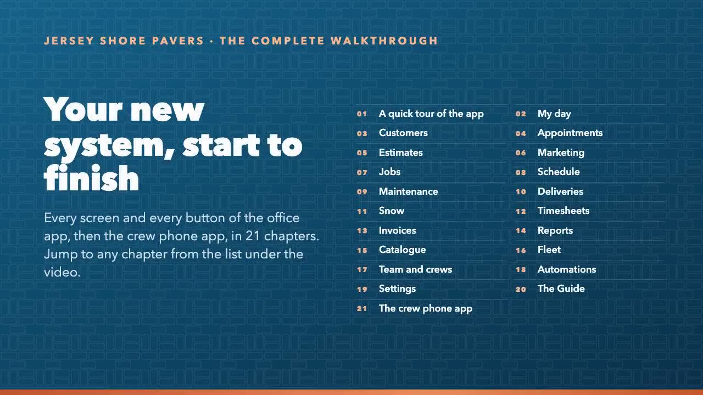

Your new system, shown on the real screens.
Short narrated videos for each job, every screen button by button, and the rules the system follows. For the office, sales, crew leads and drivers.

The complete walkthrough
One video of the whole system: every screen and every button of the office app, then the crew phone app, in 21 chapters (2:47:27). Jump to any chapter.
Watch itFind it by area
Everyday jobs
The things the office does every day, start to finish: book, quote, win, schedule, bill.
- A quick tour of the app
- Book a visit, a call back or a task for a customer
- Give someone a task (to-do, internal meeting)
- Write and send an estimate
Sell
Customers, appointments, estimates, selections and marketing emails.
- Book, log a call or edit a customer
- Book a visit, a phone call or a task
- Build an estimate: sections, materials, add-ons
- Send an estimate and follow it up
Build
Jobs, the schedule, change orders, job costing, maintenance, deliveries, snow and timesheets.
- Schedule, start and complete work on a job
- Price and approve a change order
- Check a job's profit and enter its costs
- Invoice a job's payment schedule
Money
Invoices, payments, cards, month-end, QuickBooks, reports and commissions.
- Make the QuickBooks export file
- Month-end billing: monthly accounts and maintenance
- Charge cards on file, one or many, and log a declined card
- Check a draft invoice, then email or print it
Setup
Catalogue, fleet, crews, automations, settings and your logo.
- Set up a service's kit of materials
- Add or change a truck or machine
- Log a service, oil change or repair
- Set up a crew: lead, size, hours, colour, members
Crew phone app
The crew lead's day, a job, visits and calls, the driver's runs, snow and hours: on the phone.
- Visits and phone calls on the phone
- The crew lead's day on the phone
- A job on the phone: materials, photos, notes, problems
- Snow log, truck problems and my hours
How it decides
Follow-ups, reminders, deposits, commission, job costing, overtime, notices: the rules, with today's numbers.
Moving overComing from Service Autopilot
Each thing you did in Service Autopilot, where it is now, and the guide that shows it.
Questions
Where is Help in the app?
On every screen of the office app. Ask in your own words, like "how do I move a job for rain", and the tour plays on your own screen with your own data. Tours never save or send anything; they only point.
Do crews see prices?
No. The crew phone app shows the work, the materials to load, photos and notes, never money.
Will customers get emails while we are setting up?
No. Until live email is switched on, every email and text goes to the office's test address.
Can we change the timings and the wording?
Yes. Every number on How it decides is a setting, and every automatic email can be reworded or switched off on Automations.
Does the crew app work in Spanish?
Yes, when the phone app is set to Spanish.
Why do the screens show customers we don't know?
The pictures and videos were made on demo data, so no real customer appears here.